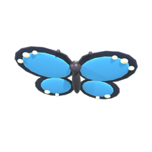
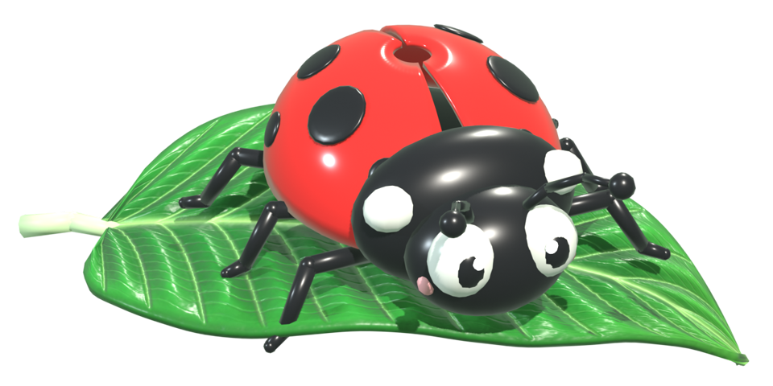
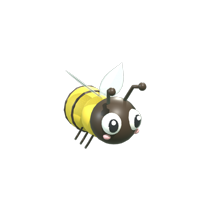
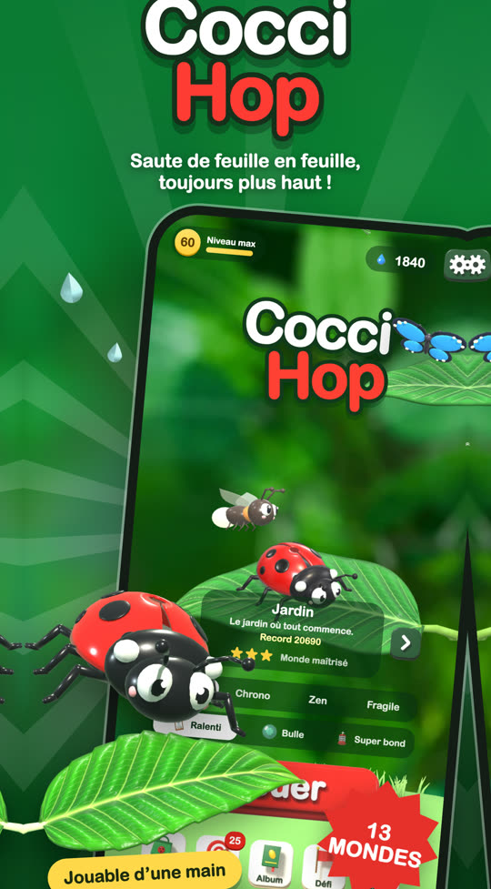
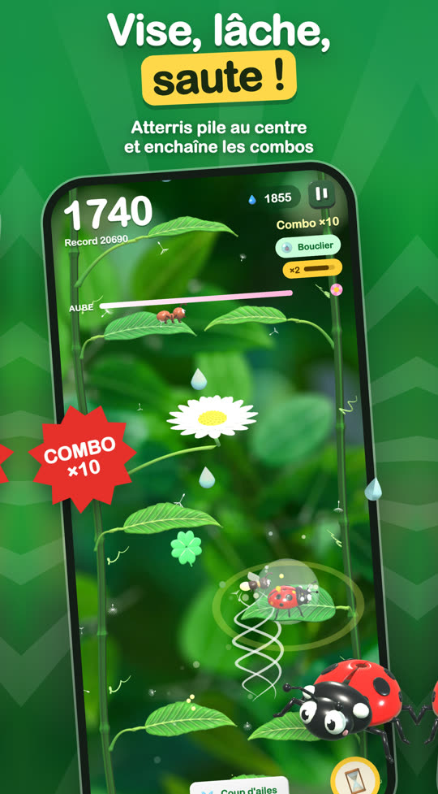
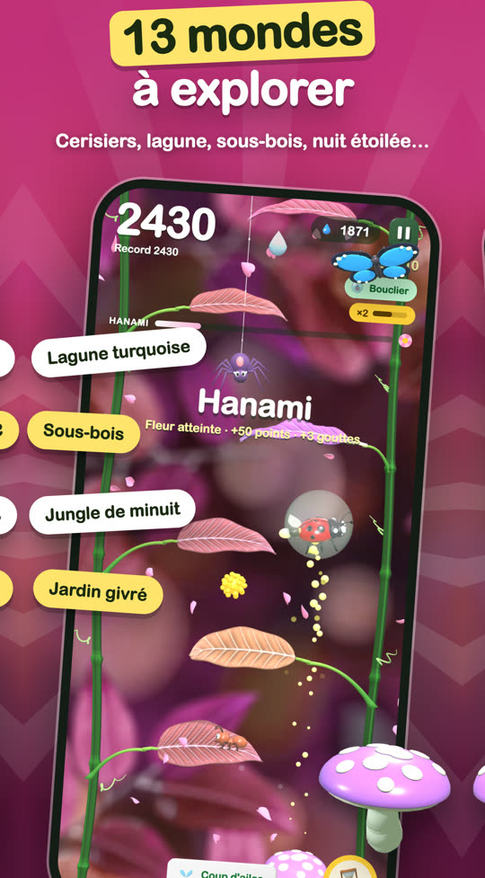
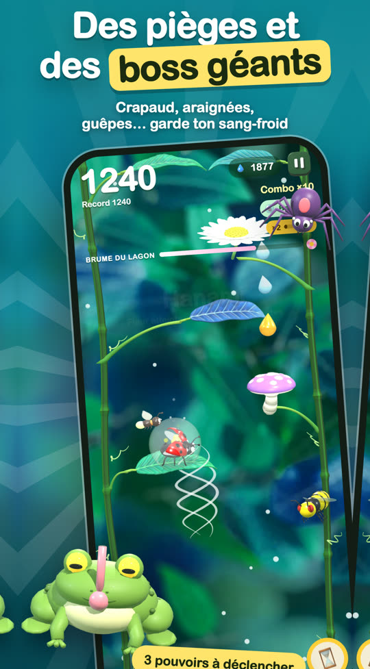
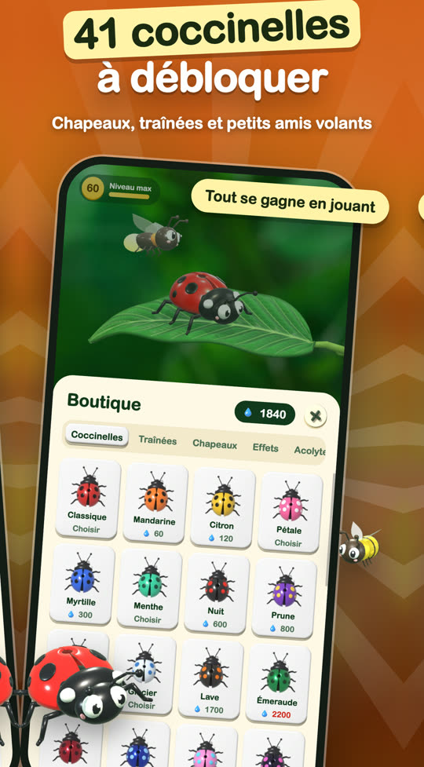
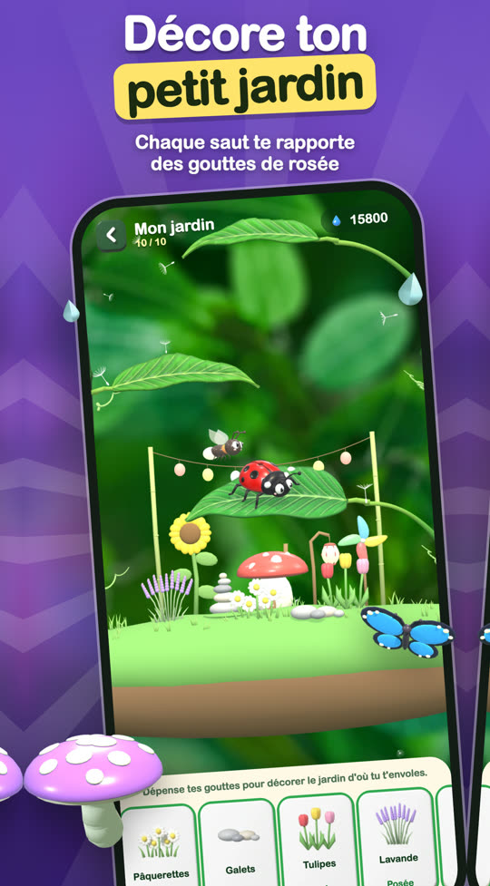
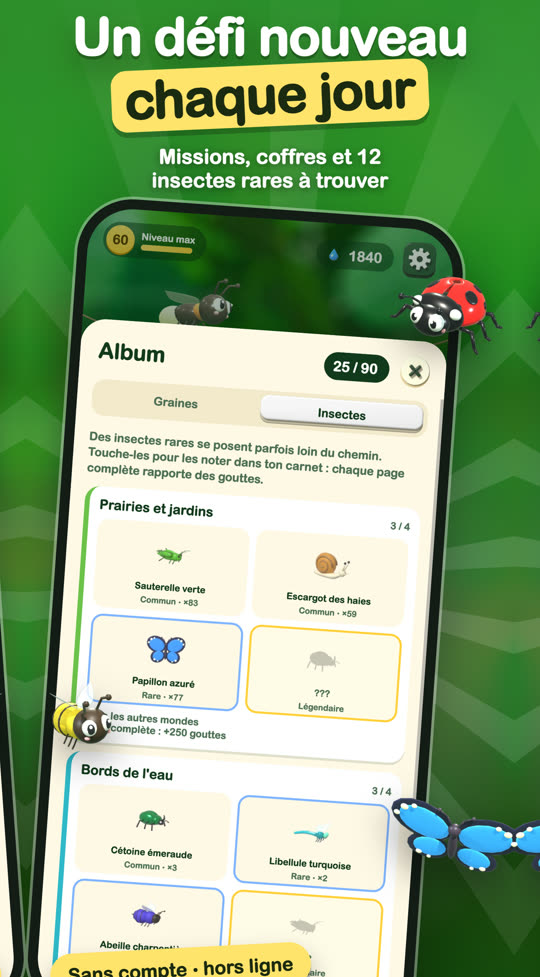

Cocci Hop
Saute de feuille en feuille, toujours plus haut !
Un jeu de saut arcade sans fin, mignon et coloré. Vise, relâche, saute : une partie se joue d'un seul doigt, même hors ligne.
Gratuit · iPhone et Android · sans compte



Une partie ne ressemble jamais à la précédente
Les feuilles tremblent, glissent, rebondissent ou se dérobent. Le vent te pousse, les guêpes rôdent, les glands tombent. Plus tu montes, plus il faut être précis.







mondes à traverser
Jardin, sous-bois d'automne, cerisier en fleurs, mare aux nénuphars, jungle de minuit… chacun avec ses couleurs et ses pièges.
coccinelles à collectionner
Avec 12 chapeaux, 11 traînées, des effets d'atterrissage et des danses de victoire.
boss à affronter
Le crapaud, la mante religieuse et le corbeau t'attendent en chemin.
défi chaque jour
Un parcours quotidien identique pour tout le monde, des missions et un coffre à ouvrir.
pouvoirs
Ralentis le temps, protège-toi dans une bulle ou déclenche un super bond.
connexion requise
Pas de compte, pas d'Internet nécessaire : idéal dans les transports.
4 façons de jouer
Deux minutes devant toi ou envie de battre ton record ? Il y a un mode pour ça.
Classique
Monte le plus haut possible.
Chrono
Fais le meilleur score avant la fin du temps.
Zen
Aucun danger, juste le plaisir de sauter.
Fragile
Chaque feuille ne sert qu'une fois.
Assistance
Une question, un problème, une idée ? On te répond par e-mail.
Écris-nous
Indique ton modèle de téléphone, la version d'iOS ou d'Android et ce qui s'est passé.
joran.vanpeene@gmail.comJ'ai acheté « Sans pubs » et les pubs sont revenues
Ouvre les réglages du jeu et touche « Restaurer mes achats ». L'achat est lié à ton compte Apple (iPhone) ou Google (Android).
Ma progression a disparu
La progression est enregistrée sur ton appareil. Elle est perdue si tu supprimes le jeu.
Comment être remboursé ?
Sur iPhone, les remboursements sont gérés par Apple, sur reportaproblem.apple.com. Sur Android, ils sont gérés par Google Play, depuis ton historique de commandes sur play.google.com.
Le jeu est-il gratuit ?
Oui. Il contient des publicités ; un achat unique « Sans pubs » retire les publicités entre les parties.